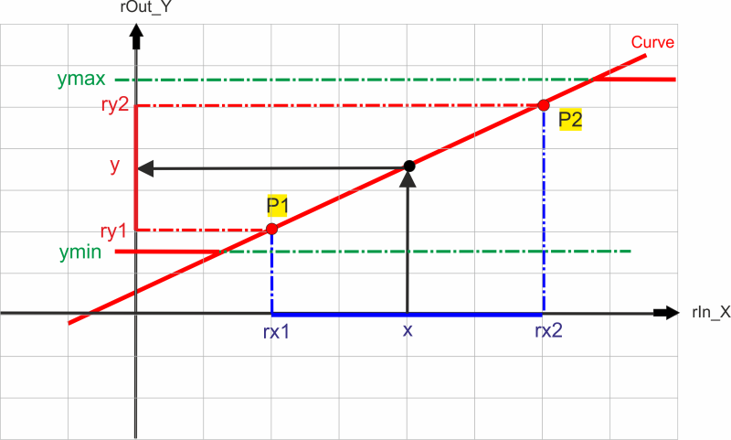

TwoPointFun (FUN)¶
FUNCTION TwoPointFun : REAL
Kurzbeschreibung¶
Lineare Umwandlung eines nummerischen Eingangswertes durch eine durch zwei Punkte definierte Kennlinie.Typische Anwendung: Skalierung von Prozessrohwerten
Schnittstellen¶
Eingänge¶
Name Datentyp Wertebereich Initialwert Funktion rIn_X REAL Analogwerteingang rX1 REAL 0 Punkt 1 des Eingangsbereiches rY1 REAL 0 Punkt 1 der Ausgangskennlinie rX2 REAL 100 Punkt 2 des Eingangsbereiches rY2 REAL 100 Punkt 2 der Ausgangskennlinie xMinMaxLimit BOOL Freigabe / Sperrung der Begrenzung am Analogwertausgang iMinMaxOffset INTEGER Werte der Begrenzungen am Analogwertausgang
Ausgänge¶
Name Datentyp Wertebereich Initialwert Funktion TwoPointFun REAL Lineare Umwandlung eines numerischen Eingangswertes xErr BOOL
FALSE: Umwandlung fehlerfrei TRUE: Fehler beim Umwandlungsprozess
Funktionsbeschreibung¶
Analogwertausgang¶
Der Analogwertausgang wird vom Analogwerteingang rIn_X in Abhängigkeit der durch die beiden Punkte P1(rX1/rY1)
und P2(rX2/rY2) bestimmten linearen Kennlinie berechnet.
Im Falle eines Konvertierungsfehlers ( xErr = TRUE ) bleibt der Analogwertausgang unverändert.

Formel
rOut_Y = (((rX1-rIn_X)*(rY2-rY1))/(rX1-rX2))+rY1
Einschränkungen
Der Analogwertausgang ist vom Datentyp REAL. Durch eine ungeeignete Auswahl der Parameter rX1, rX2, rY1 und
rY2 sowie des Wertes des Analogwerteingangs rIn_X kann es zu einer Überschreitung der Grenzen des Datentyps kommen.
Freigabe / Sperrung der Begrenzungen xMinMaxLimit¶
Die Begrenzungen des Analogwertausgangs können mit diesem Eingang generell freigegeben und gesperrt werden.
xMinMaxLimit Begrenzungen Hinweise FALSE keine Analogwertausgang ohne absolute Begrenzungen TRUE Y_min und Y_max Begrenzung des Analogwertausgangs aktiv
Werte der Begrenzungen iMinMaxOffset¶
Die Begrenzungen des Analogwertausgangs sind nur dann aktiv, falls der Eingang xMinMaxLimit aktiv ( = TRUE ) ist.
Die Grenzwerte Y_min und Y_max werden dann wie folgt berechnet:
Formeln
Y_min = rY1 - ((ABS(rY2-rY1))*iMinMaxOffset)/100Y_max = rY2 + ((ABS(rY2-rY1))*iMinMaxOffset)/100
| rY1 | rY2 | rY2 - rY1 | iMinMaxOffset | Y_min | Y_max | Hinweise |
|---|---|---|---|---|---|---|
| 0 | 100 | 100 | 0 | 0 | 100 | Standard-Begrenzungen |
| 0 | 100 | 100 | 10 | -10 | 110 | Positiver Offset |
| 0 | 100 | 100 | -10 | 10 | 90 | Negativer Offset |
Digitalausgang xErr¶
Der digitale Ausgang xErr signalisiert einen Fehler beim Umwandlungsprozess. Folgende Fehler werden berücksichtigt:
- rX1 UND rX2 = 0
- rX1 = rX2
- rY1 UND rY2 = 0
- rY1 = rY2
Fehler beim Umwandlungsprozess xErr Hinweise FALSE FALSE Umwandlung fehlerfrei TRUE TRUE Fehler beim Umwandlungsprozess
Legende: X = beliebig
Codesys¶
- InOut:
Scope Name Type Initial Comment Return TwoPointFun REAL Input rIn_X REAL Analogwerteingang rX1 REAL 0 Punkt 1 des Eingangsbereiches rX2 REAL 100 Punkt 2 des Eingangsbereiches rY1 REAL 0 Punkt 1 der Ausgangskennlinie rY2 REAL 100 Punkt 2 der Ausgangskennlinie xMinMaxLimit BOOL Freigabe / Sperrung der Begrenzung am Analogwertausgang iMinMaxOffset INT Werte der Begrenzungen am Analogwertausgang Output xErr BOOL FALSE: Umwandlung fehlerfreiTRUE: Fehler beim Umwandlungsprozess